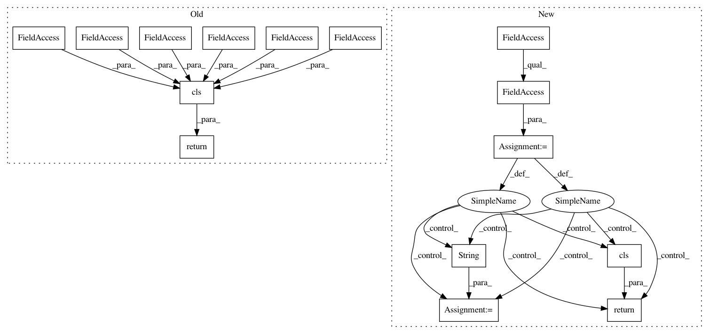

04c009712d14c4cf93ac1c011016330336dfda7d,python/ray/exceptions.py,RayTaskError,as_instanceof_cause,#RayTaskError#,95
Before Change
cls.__name__ = name
cls.__qualname__ = name
return cls(self.function_name, self.traceback_str, self.cause_cls,
self.proctitle, self.pid, self.ip)
def __str__(self):
Format a RayTaskError as a string.
lines = self.traceback_str.strip().split("\n")
After Change
exception.
cause_cls = self.cause.__class__
if issubclass(RayTaskError, cause_cls):
return self // already satisfied
if issubclass(cause_cls, RayError):
return self // don"t try to wrap ray internal errors
error_msg = str(self)
class cls(RayTaskError, cause_cls):
def __init__(self, cause):
self.cause = cause
def __getattr__(self, name):
return getattr(self.cause, name)
def __str__(self):
return error_msg
name = f"RayTaskError({cause_cls.__name__})"
cls.__name__ = name
cls.__qualname__ = name
return cls(self.cause)
def __str__(self):
Format a RayTaskError as a string.
lines = self.traceback_str.strip().split("\n")
In pattern: SUPERPATTERN
Frequency: 3
Non-data size: 15
Instances
Project Name: ray-project/ray
Commit Name: 04c009712d14c4cf93ac1c011016330336dfda7d
Time: 2021-03-08
Author: ed.nmi.oakes@gmail.com
File Name: python/ray/exceptions.py
Class Name: RayTaskError
Method Name: as_instanceof_cause
Project Name: ray-project/ray
Commit Name: 21cad5250ae8b2fed3b9747854ddaa765932f8c5
Time: 2020-07-01
Author: ed.nmi.oakes@gmail.com
File Name: python/ray/exceptions.py
Class Name: RayTaskError
Method Name: as_instanceof_cause
Project Name: ray-project/ray
Commit Name: bfb8a28a3cca940621841a52854ab3dd8ef37a76
Time: 2020-07-02
Author: rkooo567@gmail.com
File Name: python/ray/exceptions.py
Class Name: RayTaskError
Method Name: as_instanceof_cause